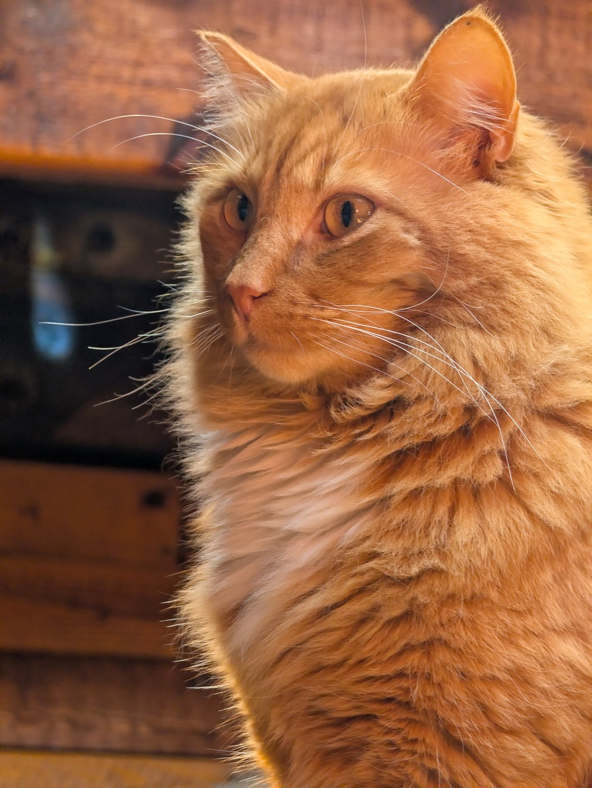

Efterlysning
Var är
Nils Stenqvist?

Stor, fluffig orange hane med vita tassar. Snäll.
Troligtvis hoppat från skutan då vi låg på svaj i inre viken nedanför Örnholmsuddvägen på Fågelbrolandet.
Van sjöman, född ombord. Äkta norrlänning, bekväm i skog och mark.
Chippad och registrerad i SVERAK · DjurID · Jordbruksverket.
Han bär min pappas själ och namn. Han är djupt saknad.
Tacksam för all information och hjälp.
Kännetecken
- Namn
- Nils, kallas Nisse
- Färg
- Orange, långhårig, vita tassar
- Kön
- Hane
- Storlek
- Stor och kraftig, mycket päls
- Lynne
- Snäll och social, van vid människor
- ID
- Chippad, SVERAK · DjurID · Jordbruksverket
- Försvann
- Plats
- Inre viken nedanför Örnholmsuddvägen, Fågelbrolandet
Om du ser honom
- Jaga honom inte. En skrämd katt springer och hamnar ännu längre hemifrån.
- Ta gärna ett foto och notera exakt plats och tid — det hjälper enormt, även om du är osäker.
- Ring direkt, dygnet runt. Alla observationer är värdefulla, även osäkra.
- Kommer han fram till dig: ge gärna mat och stanna kvar hellre än att lyfta upp honom.
- Titta gärna i sjöbodar, garage, båthus, växthus och under altaner. Katter gömmer sig nära och blir lätt instängda.
Ring oss
Missing cat — have you seen Nils? Large, fluffy ginger male with white paws, friendly. Likely jumped ship while we lay at anchor in the inner bay below Örnholmsuddvägen, Fågelbrolandet, on 25 June 2026. He is microchipped. Please don't chase him — note the place and time, and call +46 70 960 90 20 or +46 70 340 33 70 at any hour. Do check your boathouse, shed or garage. Thank you.